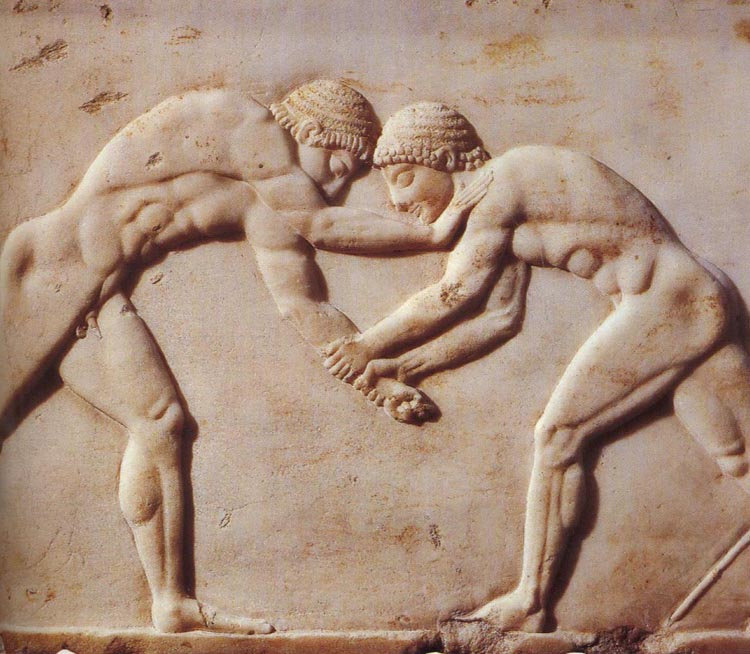
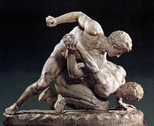

Борьба зародилась более 5000 лет назад. В Древней Греции она входила в панкратион — жёсткий вид единоборств на Олимпийских играх с 648 года до н.э. Легендарный Мило из Кротона выиграл шесть Олимпиад подряд и, по преданию, ежедневно носил на плечах телёнка, пока тот не вырос в быка.

В Древнем Риме борьба стала зрелищем для гладиаторов. После падения империи традиции сохранились в Европе — особенно во Франции и Италии. В XIX веке французы создали «французскую борьбу» — прообраз современного греко-римского стиля, где запретили захваты за ноги.

Сегодня греко-римская борьба практикуется в более чем 100 странах мира. Существуют молодёжные академии, кадетские и юниорские чемпионаты. Спорт активно развивается в Азии, Европе и на Кубе.